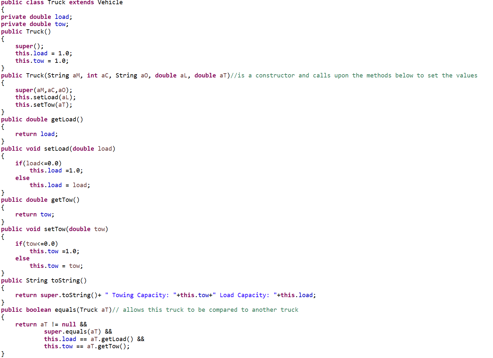
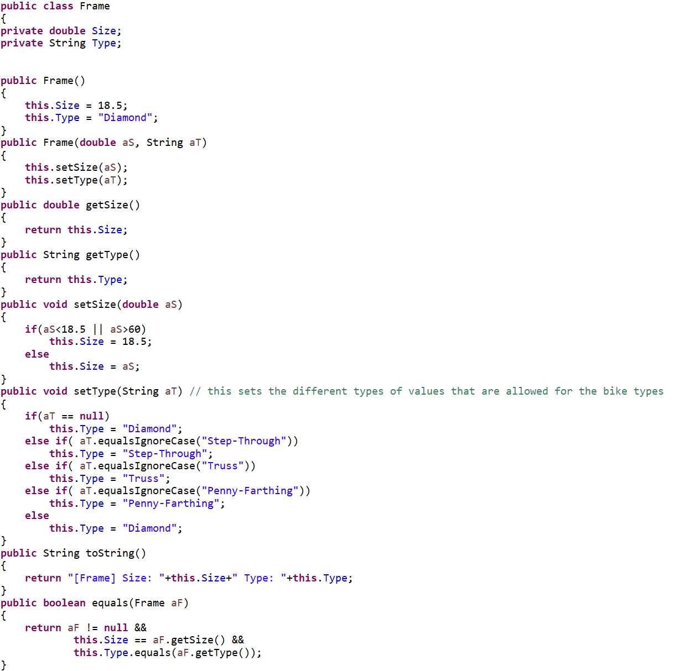
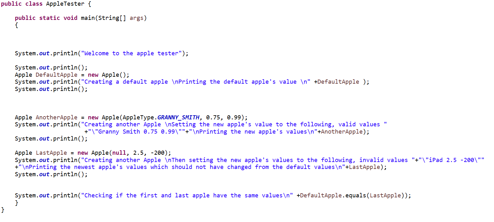

Problem Statement

USC Students need a better way to tell when Dining Hall sections close and open. Not just when the door to the building closes, but when the individual sections close.
Affinity Diagram

The Affinity Diagram gives possible solutions to the dining hall problem and has specific ideas for each solution.
Sketches

These three sketches are possible interfaces and design looks for what an app that could solve this dining hall problem could look like.
Algorithmic Design Lab 08
This is some example coding I wrote in CSCE 145 for Lab 08. It includes multiple classes and uses inheritance classes as well.
Algorithmic Design Lab 07
This is some example coding I wrote in CSCE 145 for Lab 07. It uses multiple different classes to help create a bicylce.
Algorithmic Design Lab 06
This is some example coding I wrote in CSCE 145 for Lab 06. It uses one class to beter organize information about an apple.